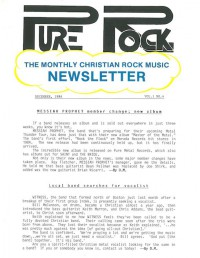

CMnexus
: Contemporary Christian culture, music, and media.
|
Pure Rock Newsletter1986
Nov, volume 1, issue 3PURE ROCK NEWSLETTER:
- "STRYPER's bassist: Tim Gaines returns" by Dan Milette
- "MATRYX changes name, releases new album" by Dan Milette
- "SAINT'S guitarist returns" by Dan Milette
Pure Rock R E V I E W:
- Stryper - To Hell with the Devil by Dan Milette
- Philadelphia - Search and Destroy by Dan Milette
| Cover |
|---|
|  | | Writers in this Issue |
|---|
Lonnie Crampsey
Dan Milette
|
Dec, volume 1, issue 4PURE ROCK NEWSLETTER:
- "MESSIAH PROPHET member change; new album" by Dan Milette
- "Local band searches for vocalist" by Dan Milette
- "STRYPER's "To Hell With The Devil" is burning up the charts." by Dan Milette
C O N C E R T U P D A T E S:
- Mass. shows for Winter / Spring 1987
Pure Rock R E V I E W:
- Prophet - Prophet by Lonnie Crampsey
|
|